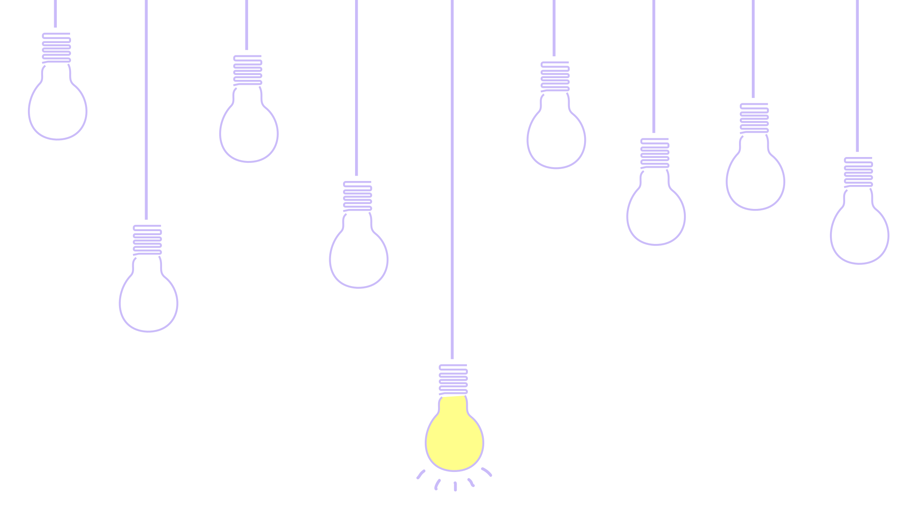
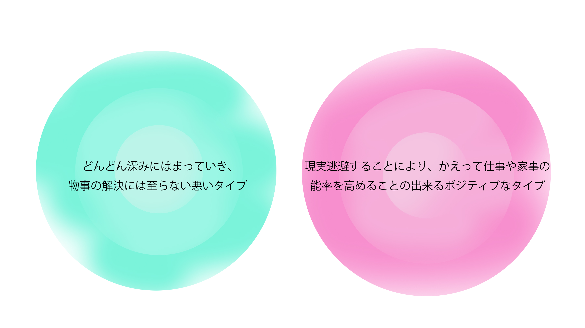
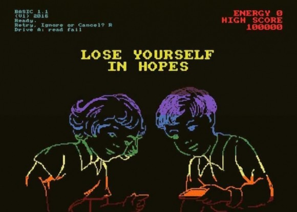
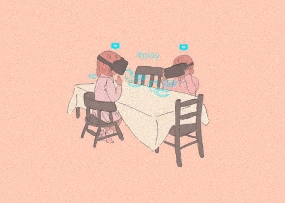
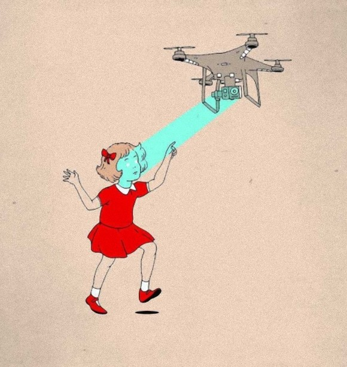
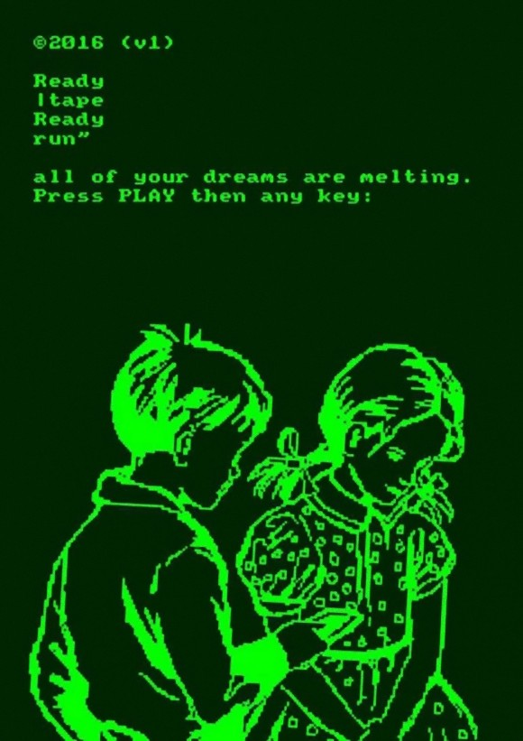

1
そもそもインターネット中毒とは
インターネット中毒の原因として挙げられるのが、私の依存理由の一つである、問題を後回しにする現実逃避である。他にも、オンラインゲームにのめり込む「ネットゲーム依存」mixi、Facebook、Twitterなどのソーシャルメディアの利用時間が長い「きずな依存」、youtubeやニコ動などの動画などにはまる「コンテンツ接触依存」、オークションや一部のソーシャルゲームに没入する「ギャンブル系参加型アプリ依存」などがある。インターネットに接続し、長時間にわたってやり続けるなど、現実世界の生活に支障をきたすまでになってきている、または、それが日常化してきていることを指す。
オフラインを試していた間、私は退屈な時間を作ることが嫌で、常に何かをしなければならないという考えにずっと囚われていた。やらなければいけない課題に取り組むが、やがてその課題をしたくなくなりネットへ逃げてしまうという悪循環を引き起こしていた。その為オフラインでいる時間は長時間続かなかった。
2
退屈だと感じること
私は日々生活している中で、退屈だと感じることが多くある。時間を持て余し、その状況に嫌気がさしてくる。なにもすることが無い場合は、電車の中やテレビの間のCMのちょっとした空き時間でもそう感じる。することがあっても、話を聞くような受容的なものである場合や、単純で軽い作業の繰り返しである場合には次第に退屈だと感じてしまう。１０日間のオフラインの時間、どの様な時にネットを見ていたか改めて考えてみた。すると、何かを調べる時や情報を得たい時に見るのは勿論だが、大体の時間は暇つぶしで見ている事に気がついた。退屈だと感じた時は、ついネットを見てしまっていたのだ。私にとって退屈な時間は無駄で勿体無い時間でしかなかった為、何かをしていないと気が済まない。この退屈な時間にネットを見るのでは無く、違う事に使う事ができるかもしれない。
3
退屈は発見に繋がる！
一般的には退屈は価値のないものと考えられがちだが、まず生活に余裕がないと退屈は生じない。一瞬一瞬に命がかかる生活では退屈を感じるわけにいかない。つまらないことの様に扱われるが、人間は、退屈しているときに思考を養い、育て、磨いている。この様な考え方で捉えると、今まで感じていた退屈な時間は決して無駄では無いのである。実際に、オフラインで過ごしていた時は自分自身と向き合う時間が普段より増えていた様に感じる。現実としっかり対峙することができるのだ。目標を定めたり、戦略を立てたり、さらには人生のプランを練るのに絶好の機会となる。

「退屈」をすることで、人生のあらゆるレベルで大切な発見をすることができるのである。また、身の回りの気付きが増える。いつもなら関心を持たない電車の広告や行き交う人々のファッション、道路に落ちているゴミ。退屈は発見に繋がるのだ。
「私は退屈を大いに信じている。テクノロジーはどれも素晴らしいが、することがないのもまた素晴らしい」
キャプション
4
退屈な時間から得るもの
スティーブ・ジョブズは、「すべては好奇心から生まれる」という信念を抱いていた。それは若い頃、長く退屈な時間が好奇心を掻き立ててくれたからである。しかし皮肉にも彼が大切にしていた退屈な時間が、自分が作ったものに奪われている。国民の退屈をむしばむことについて、彼は心配していた。私のネット中毒の解決の糸口は退屈な時間にあるのではないだろうか。
5
あえて何もしない時間を作る
現代は退屈な時間をマイナスなイメージに捉える事が多いのではないかと感じる。スケジュール帳を開くと予定でぎっしりうまっている事が良いとされ、何も予定がないと無理矢理予定を作ろうとする事もある。無駄な時間をなくして要領良く過ごしていたいと思う。しかし実際はその時間を持つ事で、余裕が生まれ、有意義な時間を過ごす事ができる。もちろん、怠けて何もしないのと退屈な時間を持つとでは違う。作業を効率化する為にあえて何もしない時間を作る。適度に休み、考える時間を持つとひらめきを生み出す事ができる。彼の数々の功績は退屈の中のひらめきが生み出している。決して無駄ではなく、生産的である。
6
現実逃避をする
現実逃避をする人の心理とはどういったものなのだろうか。ここでは10日間を通して分かった、私のやりたくない事や嫌な事からネット環境への逃避してしまう癖について掘り下げて述べていく。それは私のインターネット中毒の原因の一つで、暇つぶしでネットを見る事と同じくらい多い。
現実逃避とは、自分や自分を取り巻く環境を直視せずに、問題の先送りを行うことを指す。人から指摘された自分の短所について気が付かない振りをする、解決しなくてはならない問題を放置したり、非現実の仮想世界に耽る...など。そして、現実逃避には2種類のタイプがある。一つは、どんどん深みにはまっていき、物事の解決には至らない悪いタイプのもの。もう一つは現実逃避することにより、かえって仕事や家事の能率を高めることの出来るポジティブなものである。

調べた中で私が実践していきたいと思ったのは、この二番目のタイプのものだ。作業中に適当な息抜きが効果的なように、現実逃避も適当な方法を選び、時と場所をわきまえて行うと、誰からも非難されることのなく楽しくできる。しかし反対に避けたいのは、あとで自分自身が尻拭いをする羽目になるようなもの、必要ないにも関わらず高価なものを衝動買いしてしまったり、とっさの判断で退職したり、ネットにはまりすぎて人間関係にひびが入ったり、といったことがないようにすることが大切である。試験前や課題の締め切りが近くなると、現実逃避したくなるという現象がある。これは頑張っているにも関わらず、失敗してしまうかもしれないという恐れを抱くことに起因している。精神的な負担が過剰になりすぎると、心にかかる負荷を減らすために、いわば自衛作用がはたらき、当面の問題を棚上げしようする。しかしこれは一時的な現象で、集中力を再び高めるために必要なプロセスだろう。
困難なタスク中に集中力や思考力を高めるには、すべてを放り出して現実逃避したくなる前に、定期的に休息タイムを入れるなどの工夫が必要である。軽く休憩を取ることにより、目の前のタスクから一時的に遠ざかり、疲れてきた精神状態を再び元のフレッシュな状態にリセットすることができる。これは、あえて退屈な時間を作り、考える時間を持つとひらめきが生まれる事と少し似ている。
７
コラム : クリスチャン・ジョーンズ




今回ヒーローの挿絵に使用したイラストは、イギリスを拠点に作家活動をするイラストレーター兼クリエイターのクリスチャン・ジョーンズ。インターネットやデジタルダデバイスが欠かせない時代の子供達を題材に、風刺イラストを描いている。